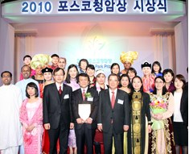
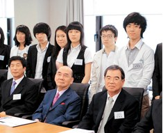

포스텍 박태준미래전략연구소 소장 송민석입니다. 박태준미래전략연구소는 고 박태준 회장의 정신을 계승하여 포스텍의 비전을 실현하기 위해 설립되었습니다. 박태준 회장께서는 산업과 교육이 국가 발전의 핵심임을 강조하시며, 포스코와 포스텍을 설립하여 한국 경제와 학문의 중흥을 이끄셨습니다. '교육은 국가의 미래를 결정짓는 가장 중요한 투자'라는 신념으로 실용적 학문과 창의적 연구가 조화를 이루어야 함을 강조하시며 학생들이 단순한 지식 습득을 넘어 실질적인 문제 해결 능력을 기를 수 있도록 하는 것이 대학의 역할이라고 말씀하셨습니다. 박태준미래전략연구소는 박태준 회장의 정신을 이어받아 대학과 사회가 직면한 미래 과제를 분석하고 포스텍의 지속 가능한 발전 전략을 모색하며, 다음 두 가지 핵심 목표를 추진하고자 합니다. 첫째, 포스텍의 중장기 발전 전략을 수립하는 것입니다. 둘째, 박태준 정신과 리더십을 연구하여 차세대 인재들에게 전파하고 교육하는 것입니다. 박태준미래전략연구소는 급변하는 과학기술 환경과 사회구조 변화 속에서 포스텍이 세계적인 대학으로 성장할 수 있도록 전략적 방향을 제시하고 지속 가능한 미래를 향해 길을 열어가겠습니다.
박태준미래전략연구소 소장 송민석

